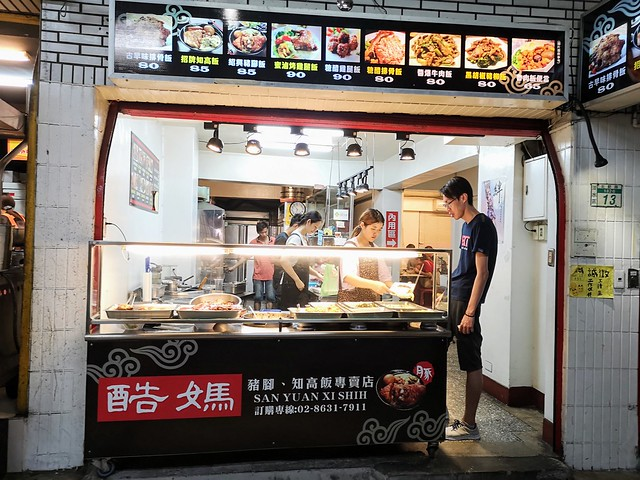
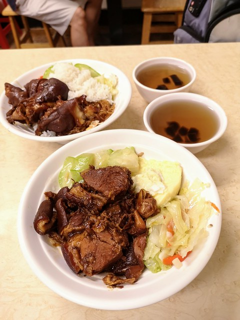

酷媽豬腳
google評價：4.0★
店家資訊
地址：新北市淡水區北新路182巷13號
營業時間：早上10:30至晚上8:30，星期六休息
店家電話：02-8631-7911

推薦菜單
古早排骨飯80元 招牌知高飯85元 紹興豬腳飯85元
蜜滷烤雞腿飯90元 糖醋排骨飯80元 牛肉飯80元
豬柳飯80元 滷肉飯便當65元
顧客評論
這家豬腳店便宜又好吃，每個飯類斗可以選擇三種配菜，每種菜色都清淡且不會過鹹，而如果在店內吃的話，白飯可以免費加飯不用擔心吃到飽，而內用也有特別的仙草茶可以無限續加。豬腳的部分本身很入味，外皮很軟Q很有嚼勁，而知高飯的蹄膀連皮帶肉，吃起來不會過油太乾柴，還吸附了滷汁精華。